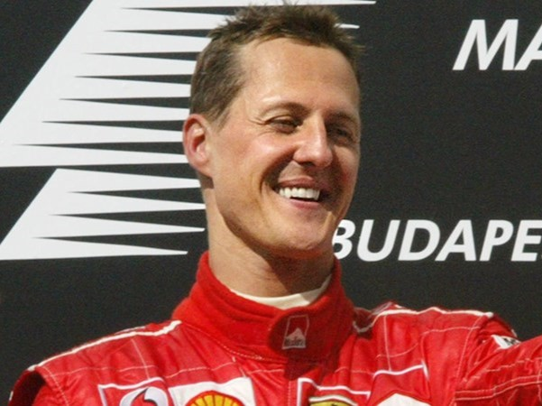
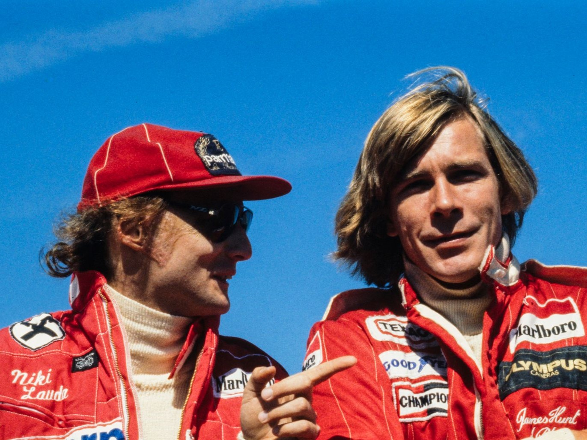

Michael Schumacher after the 2004 Hungarian Grand Prix
Michael Schumacher
Michael Schumacher is a German former racing driver who is considered one of the greatest
drivers in the
history of Formula One. He won seven World Championships and set numerous records during his
career,
including the most wins, poles, and fastest laps in F1 history. Schumacher had several memorable
rivalries during his time in F1, including battles with Damon Hill, Jacques Villeneuve,
and Mika
Hakkinen.
In 1994, Schumacher famously collided with Damon Hill in the final race of the season, securing his
first championship but drawing criticism for unsportsmanlike behavior. Schumacher also had a
controversial collision with Jacques Villeneuve in the 1997 championship decider, for which he was
disqualified from the season's results.
One of Schumacher's most intense rivalries was with Mika Hakkinen, who he faced in the late 1990s and
early 2000s. The two drivers battled for the championship in several seasons, with Hakkinen ultimately
coming out on top in 1998 and 1999, and Schumacher winning five consecutive championships from 2000 to
2004.
Despite the controversies and fierce competition, Schumacher was widely respected by his peers and fans
for his talent and dedication to the sport. He retired in 2006 but returned to the sport with Mercedes
in 2010, where he raced for three seasons before retiring for good in 2012. In 2013, he suffered a
severe head injury while skiing and has been out of the public eye since.
Ayrton Senna was a Brazilian racing driver who is widely regarded as one of the greatest drivers in the
history of Formula One. He won three World Championships during his career and set numerous records,
including the most pole positions in F1 history. Senna made his debut in 1984 with the Toleman team
before moving to Lotus, where he won his first two races in 1985. He then joined McLaren, where he had
some of his most memorable moments, including his epic battles with Alain Prost.
Senna's rivalry with Prost was one of the most intense in F1 history, with the two drivers colliding on
several occasions. Senna won his first two championships with McLaren in 1988 and 1990, before moving to
Williams in 1994. However, his time with Williams was cut short when he tragically died in a crash at
the San Marino Grand Prix.
The season got off to a difficult start, with Senna struggling with the handling of the car. During the
third race of the season, at Imola, Senna suffered a high-speed crash during qualifying, which left him
shaken but otherwise unhurt.
The following day, during the race, Senna's car went off the track at high speed and hit a concrete
wall. He suffered severe head injuries and was airlifted to a nearby hospital, where he was pronounced
dead several hours later. The crash was later attributed to a suspension failure on Senna's car.
Senna's death sent shockwaves through the world of motorsport and beyond. In the wake of his death,
significant changes were made to improve safety in Formula One, including the introduction of new safety
measures and the redesign of several tracks.
Senna was known for his incredible speed, skill, and intense focus on winning. Senna's legacy continues
to inspire generations of racing fans and drivers, and he is remembered as one of the greatest sportsmen
of all time.

Two rivals, Niki Lauda and James Hunt F1 drivers in 1976
Lauda vs Hunt
James Hunt and Niki Lauda were two of the biggest names in Formula One during the 1970s, and their
intense rivalry is the stuff of legend. Hunt was a flamboyant British driver known for his daring
overtaking maneuvers and hard-partying lifestyle, while Lauda was a reserved Austrian driver who was
known for his technical expertise and strategic racing style.
Their rivalry reached its peak in the 1976 season, which was marked by a horrific crash that nearly cost
Lauda his life. During the German Grand Prix at the Nürburgring, Lauda's car swerved off the track and
hit an embankment, causing it to burst into flames. Lauda was trapped inside the burning wreckage for
nearly a minute before being rescued by fellow drivers Arturo Merzario, Guy Edwards, and Harald Ertl.
Lauda suffered severe burns to his head and face, as well as internal injuries from inhaling toxic
gases. He was given the last rites in hospital, and many believed he would not survive. However, Lauda
proved to be a fighter, undergoing multiple surgeries and a lengthy recovery process.
Despite his injuries, Lauda returned to racing just six weeks later, competing in the Italian Grand Prix
with a specially designed helmet that protected his burned scalp. He finished fourth in the race, a
remarkable achievement given the severity of his injuries.
The incident had a profound impact on Lauda, who became an advocate for improved safety measures in
Formula One. He even refused to compete at the next race, the Austrian Grand Prix, citing concerns about
the safety of the circuit.
Hunt and Lauda's rivalry was marked by mutual respect and admiration, with each driver recognizing the
other's talent and determination. They remained friends long after their racing careers ended, with
Lauda even serving as a commentator during Hunt's time as a TV presenter. Their story was immortalized
in the 2013 film "Rush", which told the story of their rivalry and the events of the 1976 season.
Lewis Hamilton's rise to the top of Formula One is a remarkable story of talent, hard work, and
perseverance. Born in Stevenage, England in 1985, Hamilton began racing karts at a young age, honing his
skills on the local circuits.
Despite his natural talent, Hamilton faced significant obstacles on his path to Formula One.His family
did not have the financial resources to support his racing career, and he was forced to rely on the
generosity of sponsors and supporters to fund his early efforts.
Hamilton's breakthrough came in 1998, when he was signed to the McLaren young driver development
program. He quickly rose through the ranks, winning multiple championships in junior categories and
impressing team officials with his speed and consistency.
In 2007, Hamilton made his debut in Formula One with the McLaren team. He finished on the podium in his
first race and went on to win his first Grand Prix just a few months later. Hamilton's early success was
not without controversy, however. He was involved in a number of high-profile incidents, including a
bitter rivalry with teammate Fernando Alonso that led to accusations of preferential treatment by the
McLaren team.
Despite these challenges, Hamilton continued to push himself and his team to new heights. He won his
first World Championship in 2008, becoming the youngest driver ever to do so at the time.
Since then, Hamilton has established himself as one of the greatest drivers in the history of the sport,
with a record-breaking seven World Championships and numerous race victories to his name. He has
overcome significant obstacles throughout his career, including fierce competition from rival teams and
personal struggles with mental health.
Through it all, Hamilton has remained committed to his craft and his values, using his platform to
advocate for social justice and environmental causes. His journey from humble beginnings to global
superstar is a testament to the power of hard work, determination, and a relentless pursuit of
excellence.